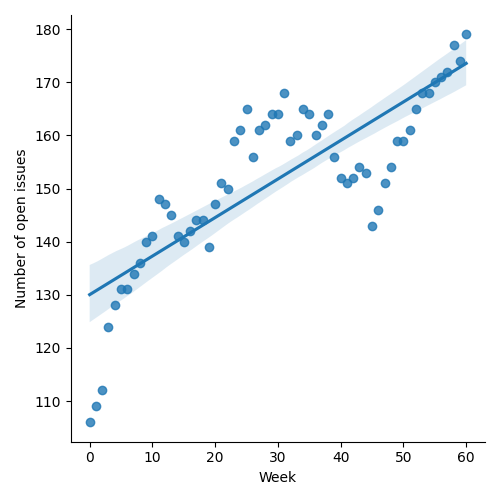
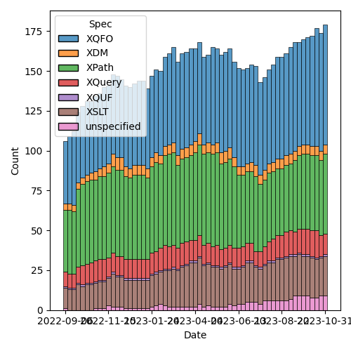
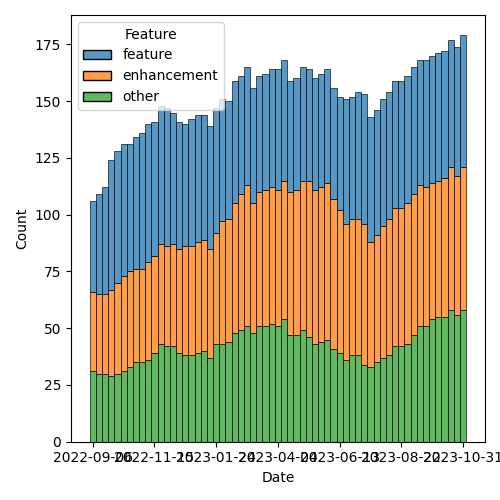

QT4 CG Meeting 053 Minutes 2023-11-07
Table of Contents
- Minutes
- Summary of new and continuing actions
[0/8] - 1. Administrivia
- 2. Technical Agenda
- 3. Any other business?
- 4. Adjourned
Agenda index / QT4CG.org / Dashboard / GH Issues / GH Pull Requests
Minutes
Approved at meeting 054 on 14 November 2023.
Summary of new and continuing actions [0/8]
[ ]QT4CG-052-02: NW to consider how to schedule an “editor’s meeting”[ ]QT4CG-052-01: MP to create a proposal for acsv-row-record-creationfunction[ ]QT4CG-052-02: MP to open an issue about supporting comment lines.[ ]QT4CG-052-03: MP to make the changes agreed to #719.[ ]QT4CG-052-04: MP to open an issue about consistency in the names of record types[ ]QT4CG-052-05: MK to rename thehexBinary-equalfunction tobinary-equal?[ ]QT4CG-052-06: MK to consider the editorial question of “promotion” for the symmetric relations.[ ]QT4CG-052-07: NW to movefn:invisible-xmlto the section on parsing and serialization functions
1. Administrivia
1.1. Roll call [11/12]
[X]Reece Dunn (RD)[ ]Sasha Firsov (SF)[X]Christian Grün (CG)[X]Joel Kalvesmaki (JK) [:5-][X]Michael Kay (MK)[X]John Lumley (JL)[X]Dimitre Novatchev (DN)[X]Matt Patterson (MP)[X]Wendell Piez (WP)[X]Ed Porter (EP)[X]C. M. Sperberg-McQueen (MSM)[X]Norm Tovey-Walsh (NW). Scribe. Chair.
1.2. Accept the agenda
Proposal: Accept the agenda.
Accepted.
1.2.1. Status so far…

Figure 1: “Burn down” chart on open issues

Figure 2: Open issues by specification

Figure 3: Open issues by type
1.3. Approve minutes of the previous meeting
Proposal: Accept the minutes of the previous meeting.
Accepted.
1.4. Next meeting
The next meeting is scheduled for Tuesday, 14 November 2023.
No regrets heard.
1.5. Review of open action items [8/8]
[X]QT4CG-052-01: MK to propose text for mutual promotion between xs:hexbinary and xs:base64Binary[ ]QT4CG-052-02: NW to consider how to schedule an “editor’s meeting”
1.6. Review of open pull requests and issues
1.6.1. Merge without discussion
The following PRs are editorial, small, or otherwise appeared to be uncontroversial when the agenda was prepared. The chairs propose that these can be merged without discussion. If you think discussion is necessary, please say so.
- PR #813: 809 Move fn:atomic-equal to section 14.2
- PR #807: 789 Serialization terminology [editorial]
- PR #806: A few minor fixes for parse-uri
- PR #804: Minor edits, XQFO chh. 7, 8
- PR #803: 651: fn:log → fn:message
- PR #802: 801: non-deterministic → nondeterministic
- PR #800: 660: Static functions, default parameters, XPST0017
- PR #797: Edits to parse-uri()
- PR #793: 704: Context Value Expression → Context Value Reference
- PR #792: 783 XSLT: errors are raised
- PR #790: 129 XSLT40 and SER40 changes for context item -> value
- PR #775: 517: Reflected Christian Gruen's remarks
Proposal: Accept these PRs without discussion.
Accepted.
1.6.2. Close without action
It has been proposed that the following issues be closed without action. If you think discussion is necessary, please say so.
- Issue #756: JSON serialization - number formatting
Proposal: Close without action.
Accepted.
1.6.3. XSLT focused
The following PRs appear to be candidates for a future XSLT-focussed meeting.
- PR #792: 783 XSLT: errors are raised
- PR #470: 369: add fixed-prefixes attribute in XSLT
- PR #412: 409, QT4CG-027-01: xsl:next-match
These issues identify the XSLT-focused changes that have been made to the specifications but which have not been established by the community group as the status quo.
1.6.4. Substantive PRs
The following substantive PRs were open when this agenda was prepared.
- PR #815: 130 Binary Promotion
- PR #798: 479: fn:deep-equal: Input order
- PR #795: 655: fn:sort-with
- PR #794: 216: fn:unparsed-text: End-of-line characters
- PR #791: 238: First draft of an fn:invisible-xml function
- PR #772: Revise the fn:parse-html rules to make them clearer to follow.
- PR #761: 554/754 Simplify the new transitive-closure function
- PR #737: 295: Boost the capability of recursive record types
- PR #736: 730: Clarify (and correct) rules for maps as instances of function types
- PR #719: 413: Spec for CSV-related functions
- PR #529: 528: revision of json(), and renaming to elements-to-maps()
1.6.5. Proposed for V4.0
The following issues are labled “proposed for V4.0”.
- Issue #716: Generators in XPath
- Issue #689: fn:stack-trace: keep or drop?
- Issue #583: array:replace(), etc
- Issue #340: fn:format-number: Specifying decimal format
- Issue #260: array:index-of
- Issue #238: Support Invisible XML
- Issue #130: New super/union type xs:binary?
- Issue #91: name of map:substitute
- Issue #33: json parsing number type option
- Issue #31: Extend FLWOR expressions to maps
2. Technical Agenda
2.1. PR #719: 413: Spec for CSV-related functions
Matt will join us again this week. It would be nice to see some of this work merged into the spec.
See PR #719.
Matt presents the issues and discussion around #719.
- As defined,
parse-csvdoesn’t do what you expect.- The “parse-{format}” function returns the most common use case and
that’s not what the current version of
parse-cvsdoes. - There are lots of parse functions.
- But perhaps they aren’t all that useful?
- On balance, the current style of naming is the least-worst option
- We have prior art with parse-json and friends in the spec
- Rename
csv-to-xdmtoparse-csvand then rename it.- Perhaps
csv-to-simple-rows
- Perhaps
- If there should be only one function, we could add a
simple-rowsoption to theparse-csvfunction. - MP would prefer to keep separate functions
- The “parse-{format}” function returns the most common use case and
that’s not what the current version of
- Open Knowledge Foundation (OKFN) has a comprehensive guide to types of CSV
- CSV dialect project
- There are a couple of substantive changes
- They allow you to specify a comment character (ignore whole lines)
- You can specify an escape character to use; but that apparently conflicts with field quoting, so nevermind?
- Enough people have asked about the comment character that it might be worth doing.
- The extra slightly odd function is
csv-fetch-field-by-column. Aimed at supporting folks with odd CVS structures but still might want the convenience of row-records.- That seemed to be a little baffling to most people
- Perhaps instead provide a convienence function to build csv-row-records?
- We should make sure that the record types that we produce have
meaningful names.
- MK: That’s a good point.
- JK: Couldn’t it just be
csv-to-rows? What doessimpleadd? - MP: We have
csv-row-recordsso it would be likely that when rows were talked about, people might think of the types, not a simple list of strings. - JK: What about
csv-to-columns? If you let people invert the matrix to get arrays of columns they can get fields as they needs. - MP: I’m very wary of anything that operates on columns because when they’re large, they’re very very large.
Some discussion of large output from parse-csv. More opportunities
for laziness there.
- CG: Thanks for spending some much time on the proposal. I think I
would really like to have only one parse function. That way you
could have
csv-docand you wouldn’t have to callunparsed-textor similar.- Plus, if we wanted to add more options in the future, there would only be one function.
- MP: Because they’re quite significantly different formats, I would prefer to have them separated out. I don’t think that the options are identical is a problem. If there’s a consensus that one function is preferable, that wouldn’t be the end of the world.
- RD: If the return types are different between the different
functions, I’d prefer them as separate functions. That’s better than
having
item()oritem()*as a return type. Having that erodes type information from things like IDEs. - DN: On the same thing, I agree with RD. It’s better to have many small functions than one huge one. The single responsiblity principle means we should have small functions.
- MK: I’m just asking about the status of the proposal: how does what
is on the slides reconcile with PR #719?
- … You’re proposing an ammendment, correct?
- MP: Yes. No changes to return types or formats, all that’s being
proposed here is that some functions are renamed. And we either
ditch
csv-fetch-fields-by-columnor replace it with some other convenience function. - CG: In the previous proposal, there was a function that was returned by a get-row-column type.
- MP: That’s still included; the idea of
fetch-fields-by-columnis that function but not bound. It’s a partial application that includes the map of column names to column indexes it would behave in exactly the same way.
Lots to unpack here.
Would the group prefer parse-csv with an option, or
csv-to-(simple)-rows function?
Straw poll: one parse-csv function with options, or more functions.
- Single function: 1
- Multiple function: 6
Consensus is for more than one function.
What about fetch-fields-by-column?
There seem to be three possibilities:
- Keep it.
- Just drop it.
- Drop it, but also provide some sort of
csv-row-record-creationfunction - NW: If we take option 3 as a seperable proposal, we can make the question simpler.
Straw poll: keep the function or drop it.
- Keep it: 0
- Drop it: several
Consensus: drop it.
ACTION: MP to create a proposal for a csv-row-record-creation function
Some discussion of the question of comment lines…
- MK: Should we add a filter-text-lines functionality instead?
- MP: The problem is that because of the way field quoting works, if we do it after the fact, a thing that contains a comment line can be in a quoted field.
- CG: My experience is that files are either regular or they’re really very strange and the have to be managed manually.
Some discussion of whether or not anyone has actually encountered OKFN-style files “in the wild”. Comment lines appear to be the only feature that is common. The RFC explicitly punts on that question.
- MP: Knowing how OKFN arose, it’s likely that they had experience
with a lot of data sets. Comment lines have been raised in several
context, so I think that’s the one that’s worth taking now.
- … I’ve never seen the escaping thing and I’ve seen some pretty weird CSVs. We could come back to that.
Straw poll: Should we support comment lines?
- In favor: 2.5
- Opposed: 2
No consensus there.
ACTION: MP to open an issue about supporting comment lines.
ACTION: MP to make the changes agreed to #719.
We’ll plan to put PR #719 on the “merge without discussion list” for next week.
ACTION: MP to open an issue about consistency in the names of record types
Thank you to MP for his efforts!
2.2. PR #772: Revise the fn:parse-html rules to make them clearer to follow.
See PR #772
RD reviews the PR.
- RD: Background is that in the HTML parsing tests in the QT spec,
there’s been a discussion around parsing of embedded SVG. The
question is about preserving the case of element names. This also
applies to case-sensitive attribute names.
- … I’ve updated the spec to clarify that. MK also noted that the
parse-htmlrule description wasn’t especially readable, so I’ve tried to improve that. - … I haven’t applied the comment about the fact that the rules should describe what the function does; I think it’s clear.
- … I’ve updated the spec to clarify that. MK also noted that the
- RD: I’ve rewritten the rules to address the question of what the
HTML specification calls the “input byte stream”.
- … Those were detailed previously, but I’ve reworded it to be clearer.
- RD: From there, I’ve described the sequence of operations that have to be performed to construct an HTML document, specifically addressing questions of tokenization, HTML document tree, and mapping that tree to an XDM.
- RD: To address the issue of case names, the local name rules have
been rewritten to explicitly call out the SVG element name mapping,
but continuing to observe the general casing rules otherwise.
- … What was a note about local names containing an invalid character into explicit rules.
- … Moved the element namespace URI into the normative text.
- RD: I’ve done similar changes for attribute local name mapping.
- … Called out the namespace qualified attributes defined by HTML.
- RD: Case-sensitive SVG names should now be clear.
Proposal: accept this PR.
Accepted.
2.3. PR #815: 130 Binary Promotion
See PR #815
MK describes the proposal.
- MK: There are two impacts: one on XQuery/XPath and a minor change to
the operators part of F&O. But the signifant changes can be reviewed
in the XPath spec.
- … There are two main, but largely independent things. First, the
coercion rules allow you use
hexBinarywherebase64Binaryis required and vice-versa. And the binary operators on binary data types have similar changes. - … There’s now a single type promotion table. This substantially reduces the amount of prose.
- … There’s a lot more change marking than you might expect because I’ve moved the sections around.
- … There are two main, but largely independent things. First, the
coercion rules allow you use
- MK: The other changes is in operator mapping tables.
- … The way type promotion is described has been changed. We have three families of types within which there is mutual promotion; this is relevant to the section of operators in the operators table.
- … We can now speak of “binaries” conceptually as being the same.
- MK: CG is correct to observe that promotion now refers to two different things that could be separated.
- RD: In that table, should
hexBinary-equalbe renamed tobinary-equal? - MK: Yes, that would be a trivial change.
ACTION: MK to rename the hexBinary-equal function to binary-equal?
- JL: We have two kinds of promotion; numeric ones are a sequence, but binary and string/uri promotion are symmetric.
- MK: Yes, using “promotion” for that is a little strange. I can look at that editorially.
ACTION: MK to consider the editorial question of “promotion” for the symmetric relations.
Proposal: accept this PR.
Accepted.
2.4. PR #791: 238: First draft of an fn:invisible-xml function
See PR #791
- MK: Looks good to me.
- CG: I added a last comment; the function could be moved to parsing and serialization.
- NW: Okay, I can do that.
ACTION: NW to move fn:invisible-xml to the section on parsing and serialization functions
Proposal: Accept the PR with that change.
Accepted.
2.5. PR #761: 554/754 Simplify the new transitive-closure function
See PR #761
- MK: CG and DN both expressed concern about the function doing more than it should.
- … It also goes beyond the use cases.
MK reviews the PR.
- MK: You apply the
stepfunction until the results are unchanged.- … Removed the min value and the max function.
- … There’s now an equivalent XQuery implementation.
- JL: Assumption is that in a finite tree, you’ll always come to an end.
- MK: Yes, unless you create new nodes.
- DN: Why is this only on nodes? It could apply to any collection. If
it’s only nodes, maybe we should put
-nodein the name. - MK: It could be generalized, but you’d have to provide (or assert) an equality function.
- DN: Would prefer to have it operate on more than nodes.
- MSM: Getting rid of
minreduces convenience for some minimal length; but I can still get paths of at least a certain size. - MK: That one’s quite difficult. You can’t always detect the number of paths between two nodes.
- MSM: Speaking abstractly, I prefer if when something is simplified, there are ways to get the more complicated things. Maybe we can come back to generalizing.
- DN: I think removing the max parameter is not a problem, especially if we can make it return a generator.
Rather than trying to rush the decision, we’ll put this on the “merge without discussion list for next week as well.
3. Any other business?
None heard.